愿景："让编程不再难学，让技术与生活更加有趣"
愿景："让编程不再难学，让技术与生活更加有趣"
更多课程请访问 xdclass.net
第一章 课程简介和初始Vue
第1集 Vue3零基础到项目实战课程简介
简介：零基础到项目实战课程简介
适合人群
前端工程师
后端工程师
测开工程师
岗位需求
课程大纲速览
学后水平
- 全方位讲解vue全家桶：脚手架、路由、vuex的理解和使用
- 掌握vue常用的api、组件传值、数据绑定和代理、虚拟dom、列表渲染key值
- 【vue3】详解setup函数和组合式api的使用
- 【vue3】掌握数据优化toRefs和生命周期函数的使用
- 【vue3】使用vue3 + vue-router4.x + vuex4.x + vant3.x开发仿美团外卖项目
项目实战演示
学习形式
- 视频讲解+文字笔记+代码分析+交互流程图
- 配套源码 + 笔记 + 课程软件 + 技术交流群 + 答疑
第2集 详解Vue到底是什么？
Vue
定义
官方：是一套用于构建用户界面的渐进式框架。与其它大型框架不同的是，Vue 被设计为可以自底向上逐层应用。
即：从使用轻量小巧核心库构建的简单应用 ==>> 引入各式各样的Vue插件的复杂应用
作者
尤雨溪
- 2014年正式对外发布Vue 0.8.0
- 2016年10月正式发布Vue 2.0.0
- 2020年9月正式发布Vue 3.0.0
特点
组件化，代码维护更加方便，大大提高了代码的复用率
声明式，开发者无需操作DOM，提高开发的效率
通过操作原生DOM
<ul></ul><script>var person = [{ name: '张三', sex: '男', age: 18 },{ name: '李四', sex: '女', age: 19 },{ name: '王五', sex: '男', age: 20 },];var str = '';person.forEach((i) => {str += `<li>${i.name}-${i.sex}-${i.age}</li>`;});var ul = document.getElementsByTagName('ul')[0];ul.innerHTML = str;</script>通过vue声明式
xxxxxxxxxx<ul id="app"><li v-for="p in person">{{p.name}}-{{p.sex}}-{{p.age}}</li></ul><script>var app = new Vue({el: '#app',data: {person: [{ name: '张三', sex: '男', age: 18 },{ name: '李四', sex: '女', age: 19 },{ name: '王五', sex: '男', age: 20 },],},});</script>虚拟DOM+Diff算法，只更新变化的DOM节点，复用不变的DOM节点
原生操作DOM
当节点发生改变时，将全部节点直接替换
虚拟DOM+Diff算法
当节点发生改变时，只改变增加或者删除的节点，不变的节点直接复用
 愿景："让编程不再难学，让技术与生活更加有趣"
愿景："让编程不再难学，让技术与生活更加有趣"
更多课程请访问 xdclass.net
第二章 开发环境搭建与初识Vue
第1集 详解搭建Vue开发环境
简介：详解Vue开发环境的搭建
下载开发版本通过
script标签引入安装Vue-devtools
克隆gitee项目 https://gitee.com/wen_zhao/devtools
xxxxxxxxxxgit clone https://gitee.com/wen_zhao/devtools.git切换到add-remote-devtools分支
xxxxxxxxxxgit checkout -b add-remote-devtools origin/add-remote-devtools安装依赖
xxxxxxxxxxcnpm i打包
xxxxxxxxxxnpm run build在chrome浏览器中添加扩展程序
解决警告提醒
全局配置设置关闭
xxxxxxxxxxVue.config.productionTip = false
第2集 用Vue写第一个hello word
简介：用Vue写第一个hello word
在网页输出
hello world准备好一个装载数据的容器
xxxxxxxxxx<div id="app">{{message}}</div>创建Vue实例
xvar app = new Vue({el: '#app', // 用于指定当前vue实例为哪个容器使用，值为css选择器字符串data: { // 用于储存数据，数据供el指定的容器使用message: 'Hello world!',},});可以自己定义快捷输出实例模板
注意
- 一个vue实例只能接管一个容器
- 插值语法：{{}} 可以读取到在data的所有属性
- data中数据发生变化，那么在容器用到的数据会自动更新
第3集 玩转Vue中模板语法
简介：玩转Vue中模板语法
插值语法
特点：用在标签体内容
写法
xxxxxxxxxx{{xxx}} // xxx是js表达式，可以拿到data里所有的属性
指令语法
特点：用在标签的解析（标签属性，标签体内容，绑定事件等）
举例（vue的指令语法形式写法：v-xxx）
xxxxxxxxxx// 解析标签属性：v-bindv-bind:href='url':href='url' // 简写模式
第4集【面试】深入理解Vue中的双向数据绑定
简介：详解vue中的双向数据绑定
单项数据绑定
特点：只能从data流向页面
实现
xxxxxxxxxx// 通过v-bind实现单项数据绑定<input type="text" :value="name" />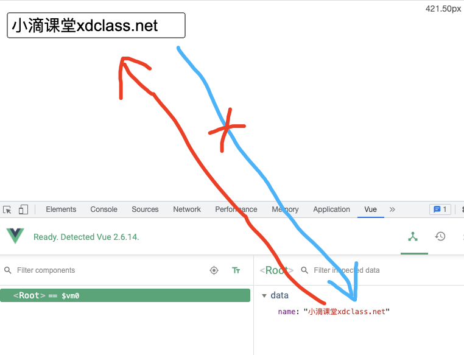
双向数据绑定
特点：不仅可以从data流向页面，也能从页面表单元素（输入元素）流向data
实现
xxxxxxxxxx// 通过v-model实现双项数据绑定<input type="text" v-model:value="name" /><input type="text" v-model="name" /> // 简写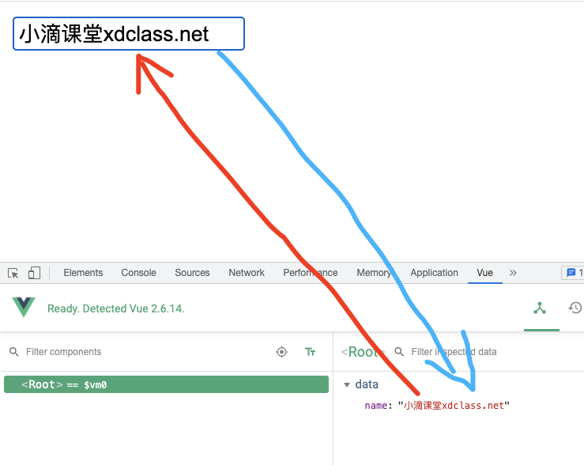
第5集【面试】剖析MVVM模型在Vue中的使用
简介：详解MVVM模型在Vue中的使用
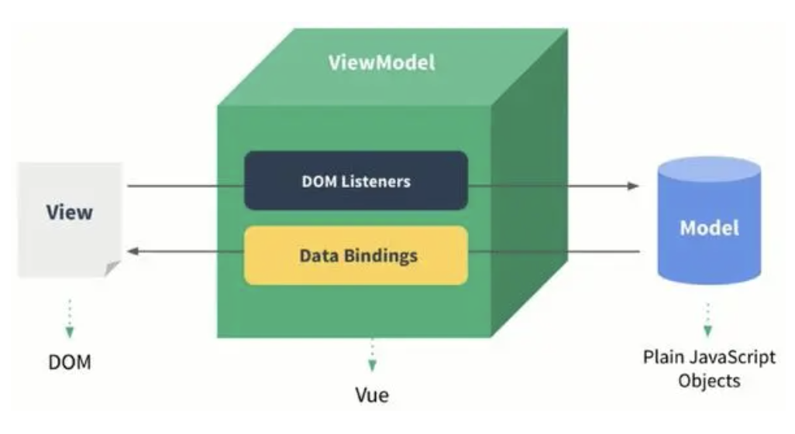
- M：Model（模型） 对应data的数据
- V：View（视图） 模板==>页面
- VM：ViewModel（视图模型） Vue实例对象
第6集【面试】Vue中的数据代理你知道多少？
简介：详解Vue中的数据代理
原理（ Object.defineProperty() ）
通过一个对象代理另一个对象属性的读写
xxxxxxxxxxObject.defineProperty('目标对象', '代理属性', {get() { // getter 当读取’目标对象‘的’代理属性‘时，get函数/getter就会被调用，且返回代理属性的值return xxx;},set(value) { // setter 当修改’目标对象‘的’代理属性‘时，set函数/setter就会被调用，且收到修改的值xxx;},});xxxxxxxxxxlet obj1 = {a: 111,};let obj2 = {b: 222,};Object.defineProperty(obj2, 'a', {get() {console.log('obj2被读取了');return obj1.a;},set(value) {console.log('obj2被修改了');obj1.a = value;},});
Vue中应用的数据代理

- 通过vm对象代理 data/_data 中属性的读写
- 能更加方便的读写vue中data的数据
- 通过
Object.defineProperty()把 data 中的属性添加到vm对象上，每个属性都有setter/getter
 愿景："让编程不再难学，让技术与生活更加有趣"
愿景："让编程不再难学，让技术与生活更加有趣"
更多课程请访问 xdclass.net
第三章 全面剖析Vue核心知识点上
第1集 详解Vue中的事件处理和常用的事件修饰符
简介：详解Vue中的事件处理和常用的事件修饰符
事件绑定指令：v-on
xxxxxxxxxx<button v-on:click="showMessge">点击</button>// 简写<button @click="showMessge">点击</button>事件传参
xxxxxxxxxx<button @click="showMessge('小滴课堂')">点击</button>methods: {showMessge(text) {console.log(text);},},注意
- methods中配置的函数不要使用箭头函数
- event.target.innerText能拿到标签的值，但是调用不加（）或者加（$event）
常用事件修饰符
阻止默认事件
xxxxxxxxxx// js中的阻止默认事件e.preventDefault()// vue@click.prevent="showMessge"阻止事件冒泡
xxxxxxxxxx// js中的阻止事件冒泡e.stopPropagation()// vue@click.stop="showMessge"// 阻止冒泡、默认事件连用@click.stop.prevent="showMessge"只触发一次事件
xxxxxxxxxx@click.once="showMessge"
键盘事件
xxxxxxxxxx@keyup.enter="showMessge"
第2集 详解Vue中的计算属性
简介：详解Vue中的计算属性
计算属性
定义
通过已有的属性计算而来
写法
读取/更改
xxxxxxxxxxfullName: {get() {return this.firstName + '-' + this.lastName;},set(value) {this.firstName = value.split('-')[0];this.lastName = value.split('-')[1];},},读取简写
xxxxxxxxxxcomputed: {fullName() {return this.firstName + '-' + this.lastName;},}// 注意：只有当只读时可以简写，有修改需求时不能使用简写
原理
通过Object.defineProperty实现
插值语法使用computed里的属性不加
()
通过methods实现
xxxxxxxxxxmethods: {fullName() {return this.firstName + '-' + this.lastName;},}计算属性优点
- 有缓存的机制，可以复用
- 效率高，调试方便
第3集 详解Vue中的监视属性
简介：详解Vue中的监视属性
监视属性
xxxxxxxxxxwatch: {isSunny: {immediate:true, // 开启初始化调用deep:true, // 开启深度监视handler() {this.plan = this.isSunny ? '打蓝球' : '敲代码';},},}被监视的属性发生改变时，调用回调函数，执行相关操作
配置
immediate:true实现初始化调用监视的属性须存在才能进行监视
深度监视
- Vue自身可以监测到多层数据的改变，但是在watch中不可以（只能监测简单的数据类型）
- 在watch中配置
deep:true可以监测多维数据，根据具体数据结构决定是否采用深度监视
简写
xxxxxxxxxxwatch: {isSunny() {this.plan = this.isSunny ? '打球' : '敲代码';},}// 注意vue所管理的函数都应写成普通函数，不被vue管理的（定时器，ajax回调函数，promise回调函数）最好写成箭头函数
第4集【面试】对比计算属性和监视属性异同
简介：详解计算属性和监视属性异同
通过监视属性实现姓名拼接
xxxxxxxxxxwatch: {firstName: function (val) {this.fullName = val + '-' + this.lastName;},lastName: function (val) {this.fullName = this.frstName + '-' + val;},}异同
- 监视属性是命令式且重复的
- 通过计算属性实现更加简介明了
- 两者都能实现的，优先选择使用computed
- watch能实现异步调用，computed不能
第5集 掌握Vue中class样式的动态绑定
简介：Vue中class样式的绑定
字符串写法
使用场景
- 样式的类型不确定
写法
xxxxxxxxxx<div :class="xd_bg">小滴课堂</div>手动触发样式改变
注意
字符串使用的是vue实例data中的已有属性
对象写法
使用场景
- 样式个数、类名确定，通过Boolean动态展示与否
对象写在内联样式
xxxxxxxxxx<div :class="{bg_red:bg_red,border:border}">小滴课堂</div>对象写在data中
xxxxxxxxxx<div :class="list">小滴课堂</div>data: {list: {bg_red: 'bg_red',border: 'border',},}
数组写法
使用场景
- 需要绑定的样式个数不确定，类名也不确定
内联写法
xxxxxxxxxx<div :class="[xd_border,xd_bg]">小滴课堂</div>数组里加三元表达式
xxxxxxxxxx<div :class="[isActive?xd_border:'',xd_bg]">小滴课堂</div>写在data中
xxxxxxxxxx<div :class="list">小滴课堂</div>data:{list:['border', 'bg_red']}
第6集 掌握Vue中style样式的动态绑定
简介：Vue中style样式的动态绑定
style写法
xxxxxxxxxx<div :style="{fontSize:'30px',color:aa}">小滴课堂</div>
 愿景："让编程不再难学，让技术与生活更加有趣"
愿景："让编程不再难学，让技术与生活更加有趣"
更多课程请访问 xdclass.net
第四章 全面剖析Vue核心知识点下
第1集 掌握Vue中的条件渲染
简介：详解Vue中的条件渲染
v-if- 写法
xxxxxxxxxx<p v-if="dice===1">打篮球</p><p v-else-if="dice===2">敲代码</p><p v-else-if="dice===3">游泳</p><p v-else>约会</p>data: {dice: '',},methods: {throwFun() {this.dice = Math.floor(Math.random() * 4);console.log(this.dice);},},特点
语法和原生js的
if...else if...else一样不展示时直接移除DOM元素，适合切换频率低的场景
v-if、v-else-if、v-else要连用
v-show写法
xxxxxxxxxx<p v-show="dice===1">约会</p>特点
不展示时使用样式隐藏，适合切换频率高的场景
v-ifvsv-show- 一般来说，
v-if有更高的切换开销，而v-show有更高的初始渲染开销。 - 如果需要非常频繁地切换，则使用
v-show较好；如果在运行时条件很少改变，则使用v-if较好。
- 一般来说，
第2集 掌握Vue中的列表渲染
简介：详解Vue中的列表渲染
v-for定义
- 用
v-for指令基于一个数组来渲染一个列表。v-for指令需要使用item in items形式的特殊语法，其中items是源数据数组，而item则是被迭代的数组元素的别名
- 用
遍历数组
写法
xxxxxxxxxx<li v-for="(item,index) in list">{{item.name}}-{{index}}</li>xxxxxxxxxxnew Vue({el: '#app',data: {list: [{ name: '张三' }, { name: '李四' }, { name: '王五' }],},});第二个参数
xxxxxxxxxx<li v-for="(item,index) in list">{{item.name}}-{{index}}</li>也可以用
of替代inxxxxxxxxxx<li v-for="(item,index) of list">{{item.name}}-{{index}}</li>
遍历对象
写法
xxxxxxxxxx<li v-for="value in obj">{{value}}</li>xxxxxxxxxxnew Vue({el: '#app',data: {obj: { name: '张三', age: '18', sex: '男' },},});第二个参数（键名）
xxxxxxxxxx<li v-for="(name,value) in obj">{{name}}：{{value}}</li>第三个参数（索引）
xxxxxxxxxx<li v-for="(name,value,index) in obj">{{index}}：{{name}}：{{value}}</li>
第3集【面试】维护状态key的作用和原理
简介：维护状态key的作用和原理
节点
xxxxxxxxxx<div><h1>小滴课堂</h1>xdclass.net<!-- 有很多的it教程 --></div>当浏览器读到这些代码时，它会建立一个 DOM 节点树来保持追踪所有内容，如同你会画一张家谱图来追踪家庭成员的发展一样
上述 HTML 对应的 DOM 节点树如下图所示：
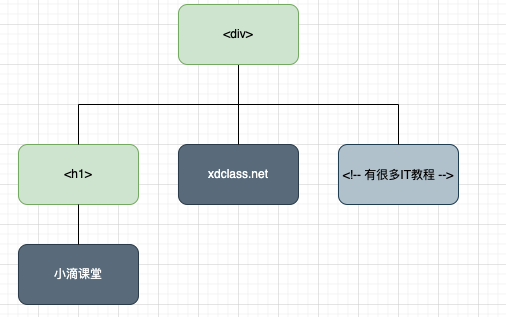
- 图解
旧：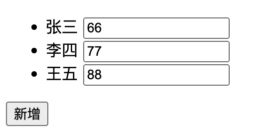 新： 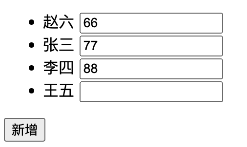
旧： 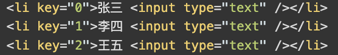 新： 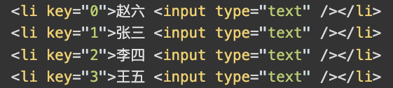
key定义
- 为了给 Vue 一个提示，以便它能跟踪每个节点的身份，从而重用和重新排序现有元素，你需要为每项提供一个唯一
key
- 为了给 Vue 一个提示，以便它能跟踪每个节点的身份，从而重用和重新排序现有元素，你需要为每项提供一个唯一
写法
xxxxxxxxxx<li v-for="(item,index) in obj" :key="item.id">{{item.name}}</li>xxxxxxxxxxnew Vue({el: '#app',data: {obj: [{ name: '张三', id: '1' },{ name: '李四', id: '2' },{ name: '王五', id: '3' },],},});作用
key值使用数组的索引index，或者不加，在数组元素顺序打乱时，会产生不必要的DOM更新以及界面效果出问题key主要用在 Vue 虚拟 DOM（类似 js 对象格式的数据） 的 Diff 算法，新旧虚拟 DOM 对比，复用不变的旧节点，渲染改变的节点，提高渲染速度
第4集 掌握Vue中列表过滤
简介：详解Vue中列表过滤
列表过滤
- 做一个商品关键字搜索展示列表
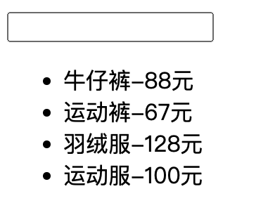
xxxxxxxxxx<input type="text" v-model="inputValue" /><ul><li v-for="item in newList">{{item.name}}-{{item.price}}</li></ul>xxxxxxxxxxnew Vue({el: '#app',data: {inputValue: '',list: [{ name: '牛仔裤', price: '88元' },{ name: '运动裤', price: '67元' },{ name: '羽绒服', price: '128元' },{ name: '运动服', price: '100元' },],},computed: {newList() {return this.list.filter((i) => {return i.name.indexOf(this.inputValue) !== -1;});},},});
第5集 掌握Vue中列表排序
简介：Vue中列表排序
列表排序
对商品列表进行排序
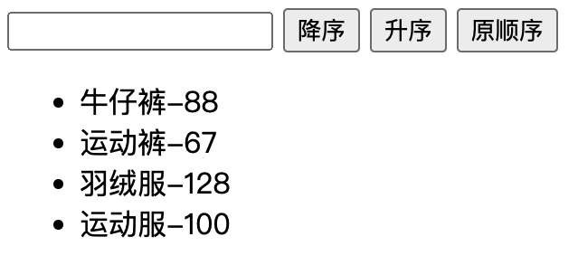
xxxxxxxxxx<input type="text" v-model="inputValue" /><button @click="keyWord=1">降序</button><button @click="keyWord=2">升序</button><button @click="keyWord=0">原顺序</button><ul><li v-for="item in newList">{{item.name}}-{{item.price}}</li></ul>xxxxxxxxxxnew Vue({el: '#app',data: {keyWord: 0,inputValue: '',list: [{ name: '牛仔裤', price: 88 },{ name: '运动裤', price: 67 },{ name: '羽绒服', price: 128 },{ name: '运动服', price: 100 },],},computed: {newList() {const arr1 = this.list.filter((i) => {return i.name.indexOf(this.inputValue) !== -1;});if (this.keyWord) {arr1.sort((a1, a2) => {return this.keyWord === 1? a1.price - a2.price: a2.price - a1.price;});}return arr1;},},});
第6集 讨论并解决Vue中数据的更新问题上
简介：详解Vue中数组数据的更新问题
对象新增数据更新问题
描述
通过普通对象添加属性方法，Vue不能监测到且不是响应式
xxxxxxxxxxthis.obj.name= '小滴课堂'
解决
Vue.set() / this.$set
xxxxxxxxxxthis.$set(this.obj,'name','小滴课堂')注意
this.$set不能给vue实例的根数据对象添加属性
第7集 讨论并解决Vue中数据的更新问题下
简介：详解Vue中数组数据的更新问题
数组数据更新问题
描述
直接通过数组索引值改变数组的数据，Vue监测不到改变
实际在
js内存已经把数据的第一项数据修改了xxxxxxxxxxthis.list[0] = { name: '李四',age: 20 };
原因
- 因为在vue中数组并没有跟对象一样封装有监测数据变化的getter、setter
解决
Vue在数组的原始操作方法上包裹了重新解析模板的方法，
也就是说我们在data里面的数组操作方法不是原生的，是vue封装过的
哪些数组操作方法经过了封装？
xxxxxxxxxxpush()pop()shift()unshift()splice()sort()reverse()
第8集 详解开发常用表单数据的绑定
简介：详解表单数据的绑定
表单形式
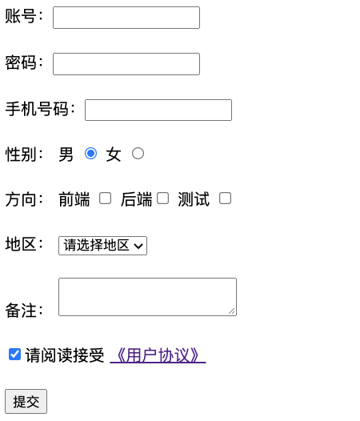
代码
xxxxxxxxxx<form @submit.prevent="submit">账号：<input type="text" v-model="userInfo.userName" /> <br /><br />密码：<input type="password" v-model="userInfo.password" /> <br /><br />手机号码：<input type="number" v-model.number="userInfo.phone" /><br /><br />性别： 男<input type="radio" v-model="userInfo.sex" name="sex" value="male" />女<input type="radio" v-model="userInfo.sex" name="sex" value="female" /><br /><br />方向： 前端<input type="checkbox" value="front" v-model="userInfo.direction" />后端<input type="checkbox" value="back" v-model="userInfo.direction" />测试<input type="checkbox" value="test" v-model="userInfo.direction" /><br /><br />地区：<select v-model="userInfo.city"><option value="">请选择地区</option><option value="beijing">北京</option><option value="shanghai">上海</option><option value="guangzhou">广州</option><option value="shenzhen">深圳</option></select><br /><br />备注：<textarea v-model="userInfo.remarks"></textarea> <br /><br /><input type="checkbox" v-model="userInfo.agree" />请阅读接受<a href="https://xdclass.net">《用户协议》</a> <br /><br /><button>提交</button></form>xxxxxxxxxxnew Vue({el: '#app',data: {userInfo: {username: '',password: '',phone: '',sex: 'male',direction: [],city: '',remarks: '',agree: true,},},methods: {submit() {console.log(this.userInfo);},},});
第9集 详解Vue指令v-text和v-html
简介：详解Vue指令v-text/v-html
已学过的指令
xxxxxxxxxxv-bind // 单向数据绑定v-model // 双向数据绑定v-on // 事件监听绑定v-show // 条件渲染v-if // 条件渲染v-else // 条件渲染v-for // 遍历数组、对象、字符串v-text写法
xxxxxxxxxx<p v-text="name"></p>xxxxxxxxxxnew Vue({el: '#app',data: {name: '小滴课堂',},});特点
- 在所在节点渲染文本内容
- 会替换节点中所在的内容
v-html写法
xxxxxxxxxx<p v-html="str"></p>xxxxxxxxxxnew Vue({el: '#app',data: {str: '<h1>小滴课堂</h1>',},});特点
- 在所在节点渲染html结构的内容
- 替换节点所在的所有内容
注意
- 在网站上动态渲染任意 HTML 是非常危险的，因为容易导致 XSS 攻击（注入恶意指令代码到网页）
- 只在可信内容上使用
v-html，不要在用户提交的内容上。
 愿景："让编程不再难学，让技术与生活更加有趣"
愿景："让编程不再难学，让技术与生活更加有趣"
更多课程请访问 xdclass.net
第五章【面试】深入理解Vue中的生命周期函数
第1集 认识vue中的生命周期函数
简介：认识vue中的生命周期函数
透明度自动变化的小案例
xxxxxxxxxx<div id="app"><div :style="{opacity }">小滴课堂</div></div>xxxxxxxxxxconst vm = new Vue({el: '#app',data: {opacity: 1,},});setInterval(() => {vm.opacity -= 0.05;if (vm.opacity <= 0) {vm.opacity = 1;}}, 60);Mounted- 帮我们执行定时器、绑定事件、订阅消息等
- vue完成模板的解析后（把真实DOM放到页面，挂载完毕）再调用
生命周期
- 通常也叫生命周期回调函数、生命周期函数、生命周期钩子
- vue初始化时在不同的阶段调用的不同函数
- 生命周期函数的
this指向为vue实例，名字不能更改
第2集 详解生命周期的初始化流程
简介：详解vue中的生命周期流程
Vue的初始化流程
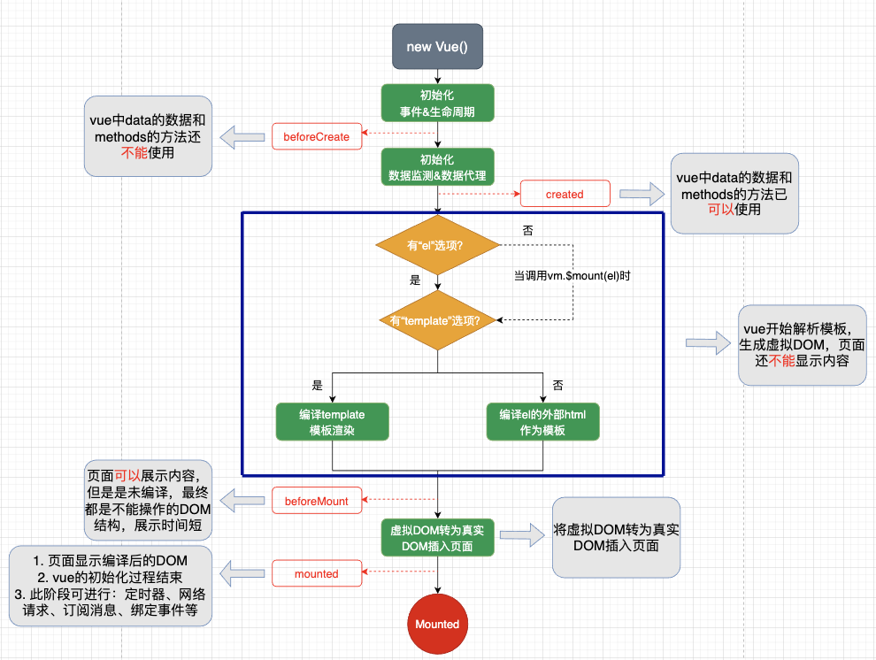
beforeCreate阶段
vue中data的数据和methods的方法还不能使用
created阶段
- vue中data的数据和methods的方法已可以使用
beforeMount阶段
- 页面可以展示内容，但是是未编译，最终都是不能操作的DOM结构，展示时间短
mounted
- 页面显示编译后的DOM
- vue的初始化过程结束
- 此阶段可进行：定时器、网络请求、订阅消息、绑定事件等
第3集 详解生命周期的更新流程
简介：详解vue中的生命周期更新流程
Vue的更新流程
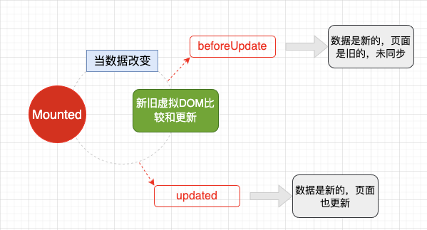
beforeUpdate
- 数据是新的，页面还没有更新
Updated
- 数据是新的，页面同步更新
第4集 详解生命周期的销毁流程
简介：详解vue中的生命周期销毁流程
Vue的销毁流程
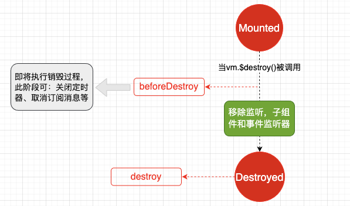
beforeDestroy
- 此阶段可关闭定时器和取消订阅
- 数据、方法可以访问但是不触发更新
destroy
一切都结束了
第5集 回顾总结Vue的生命周期流程
简介：回顾总结Vue的生命周期流程
生命周期函数
- 创建前、创建后（beforeCreate、created）
- 挂载前、挂载后（beforeMount、mounted）
- 更新前、更新后（beforeUpdate、updated）
- 销毁前、销毁后（beforeDestroy、destroyed）
常用的生命周期函数
mounted
- 开启定时器
- 发送ajax请求
- 订阅消息
- 绑定自定义事件
beforeDestroy
- 清除定时器
- 取消订阅、事件监听
- 解绑自定义事件
vue实例销毁
- vue开发者工具的数据为空
- 销毁后自定义事件失效
- 不要在beforeDestroy进行数据的操作，不会再走更新流程
 愿景："让编程不再难学，让技术与生活更加有趣"
愿景："让编程不再难学，让技术与生活更加有趣"
更多课程请访问 xdclass.net
第六章 实际开发使用的Vue脚手架
第1集 初始化创建Vue脚手架
简介：详解初始化创建Vue脚手架
定义
- Vue脚手架是官方提供的标准化开发工具（最新4.x版本）
- 网址：https://cli.vuejs.org/zh/guide/
起步
使用淘宝镜像源安装
xxxxxxxxxxnpm install -g cnpm --registry=https://registry.npm.taobao.org全局安装Vue CLI（仅第一次安装需要执行）
xxxxxxxxxxcnpm install -g @vue/cli进入到要创建项目的文件夹
xxxxxxxxxxvue create xxx启动项目
xxxxxxxxxxnpm run serve
第2集 分析Vue脚手架结构信息
简介：详解Vue脚手架结构信息
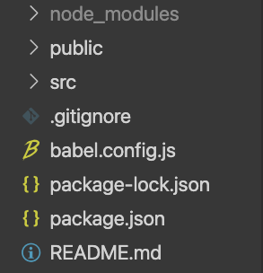
node_modules- 项目的安装依赖
public- 放置静态资源文件
src- 项目的主入口文件夹
.gitignore- git版本管制的忽略的配置
babel.config.js- ES6语法编译成ES5语法
package-lock.json- 记录了当前项目所有模块的具体来源和版本号以及其他的信息
package.json- 记录当前项目所依赖模块的版本信息
README.md- 项目说明文件
第3集 详解vue初始项目文件
简介：详解vue初始项目文件
vue初始项目文件
执行启动命令后的文件执行
main.js
- 整个项目的入口文件
- 当前引入的是运行版的vue，没有模板解析器，所以是用的是render函数
App.vue
- 所有子组件的父组件
第4集 详解Vue的配置文件修改
简介：详解Vue的配置文件修改
配置文件
查看vue脚手架的默认配置（修改不奏效）
xxxxxxxxxxvue inspect > output.js对脚手架进行设置
新建
vue.config.js文件设置
 愿景："让编程不再难学，让技术与生活更加有趣"
愿景："让编程不再难学，让技术与生活更加有趣"
更多课程请访问 xdclass.net
第七章 深入理解上手Vue的组件化编程
第1集 详解Vue组件化编程
简介：详解Vue组件化编程
图解
在使用
js框架之前的代码管理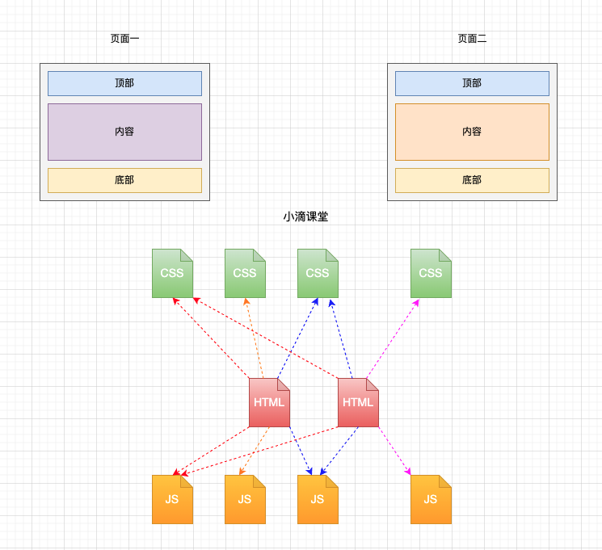
在使用
vue框架之后的代码管理
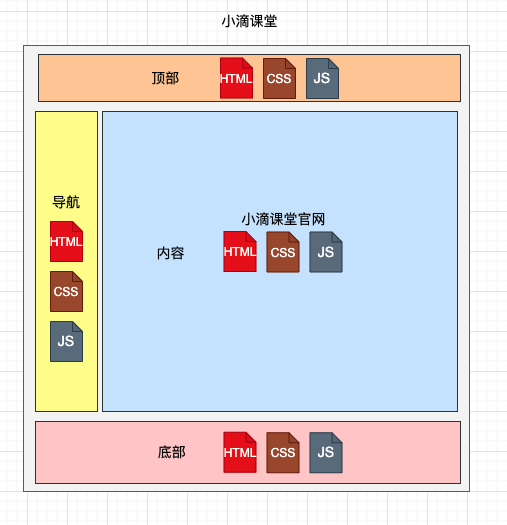
没使用组件思想构建项目的缺点
代码关系混乱，不好维护
代码复用率不高
模块
定义
- 一般指一个
js文件，提取公共或逻辑复杂的js代码
- 一般指一个
作用
- 复用
js代码、提高代码的复用率
- 复用
模块化
- 当项目中的
js都用模块来编写，那这个项目就是模块化的
- 当项目中的
组件
定义
- 实现局部功能、逻辑的代码合集（html、css、js、image、map4）
组件化
- 当项目中的功能或者页面都以组件的形式来去编写，那么这个项目就是组件化的
第2集 详解组件的全局注册与局部注册
简介：详解组件的全局注册与局部注册
全局注册
Vue.component
xxxxxxxxxxVue.component('button-counter', {data() {return {count: 0,};},template: '<button v-on:click="count++">点击了 {{ count }} 次</button>',});组件名的两中写法
xxxxxxxxxxbutton-counterxxxxxxxxxxButtonCounter //此写法直接在DOM引用时，只有button-counter才能生效组件的复用
data必须是个函数
不写el选项（实现组件可复用，一个项目中所有的组件最终都由一个vm实例管理）
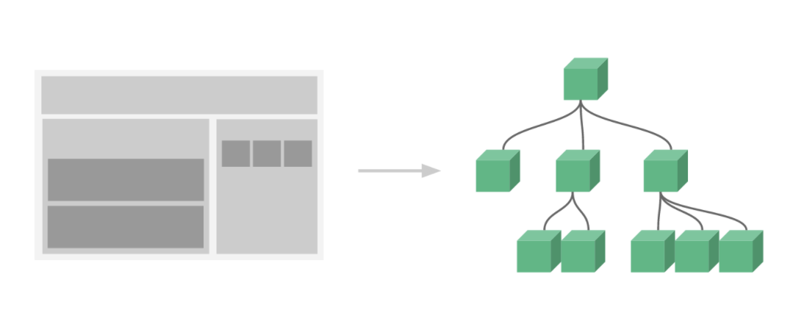
局部注册
Vue.extend
xxxxxxxxxxconst xd = Vue.extend({data() {return {count: 0,};},template: '<button v-on:click="count++">点击了 {{ count }} 次</button>',});xxxxxxxxxxnew Vue({el: '#app',data: {name: '小滴课堂',},components: {xd,},});
组件的嵌套
第3集 Vue脚手架开发必备的单文件组件
简介：深入理解单文件组件
单文件组件
结构
xxxxxxxxxx<template><div></div></template>交互
xxxxxxxxxx<script>export default {data() {return { name: '你好，小滴课堂' };},};</script>样式
xxxxxxxxxx<style>div {color: red;}</style>
- 重写案例
第4集 深入剖析Vue父子组件的传值上
简介：深入理解父子组件的传值
父向子传值
props只接收
xxxxxxxxxxprops: ["xd"]限制类型
xxxxxxxxxxprops: { xd: String }限制类型，限制必要性，限制默认值d
xxxxxxxxxxprops: {xd: {type: String,required: true,default:'你好',},},
注意
- props的数据时单向的，只能从父组件传到子组件
- props的数据不可更改，如果要更改需备份到data中做操作
第5集 深入剖析Vue父子组件的传值下
简介：深入理解父子组件的传值
子向父传值
- 父组件通过
props传给子组件事件回调传值
自定义事件（@绑定）
xxxxxxxxxx// 父组件<xd-home @myXd="dianji" />xxxxxxxxxx// 子组件dianji_xd() {this.$emit("myXd", this.name);},
自定义事件（ref绑定：灵活，延时效果）
xxxxxxxxxx// 父组件<xd-home ref="child" />mounted() {this.$refs.child.$on("myXd", this.dianji); //this.dianji在methods声明或者用箭头函数},xxxxxxxxxx// 子组件methods: {dianji_xd() {this.$emit("myXd", this.name);},},自定义事件的解绑
xxxxxxxxxxthis.$off()
- 父组件通过
第6集【面试】必须掌握的任意组件间通讯（全局事件总线）
简介：详解非父子组件间的通讯
兄弟组件的数据操作
- 将一个子组件的数据放在父组件维护（状态提升）
- 操作声明在父组件，传到另一个子组件就可实现兄弟组件间的数据操作
任意组件的事件
安装全局事件总线
xxxxxxxxxxnew Vue({beforeCreate(){Vue.prototype.$bus = this}})在需要接收数据的组件绑定自定义事件
xxxxxxxxxxmethods:{xd(i){console.log(i)}}mounted(){this.$bus.$on('xx',this.xd)}提供数据的组件
xxxxxxxxxxthis.$bus.$emit('xx',数据)解绑
xxxxxxxxxxbeforeDestroy() {this.$bus.$off();},
第7集 怎么使用Vue中的插槽？
简介：详解Vue中的插槽
默认插槽
定义
- 父子组件通讯的一种方式，可以在子组件指定的节点插入html内容
写法
父组件
xxxxxxxxxx<soltComponent><span>小滴课堂</span></soltComponent>子组件
xxxxxxxxxx<template><div><h1></h1><p><slot></slot></p></div></template>
具名插槽
定义
- 有多个html内容需要指定插入到子组件的对应节点
写法
父组件
xxxxxxxxxx<soltComponent><template v-slot:title><span>小滴课堂</span></template><template v-slot:website><span>xdclass.net</span></template></soltComponent>子组件
xxxxxxxxxx<template><div><h1><slot name="title"></slot></h1><p><slot name="website"></slot></p></div></template>注意
v-slot:title只能写在template标签以及组件上，可以写成
slot='title'但是此用法在vue3被弃用
作用域插槽
定义
- 数据定义在子组件，但是数据需要在父组件的插槽中使用
写法
父组件
xxxxxxxxxx<soltComponent><template v-slot="{ list }"><li v-for="(i, index) in list" :key="index"></li></template></soltComponent>子组件
xxxxxxxxxx<template><div><slot :list="list"></slot></div></template>
第8集 实现Vue 组件中的复用功能—混入（mixin）
简介：详解混入实现复用功能
混入
定义
- 提供了一种非常灵活的方式，来分发 Vue 组件中的可复用功能。一个混入对象可以包含任意组件选项。当组件使用混入对象时，所有混入对象的选项将被“混合”进入该组件本身的选项
写法
局部混入
定义个混入对象
xxxxxxxxxx// mixin.jsexport const myMixin = {data() {return {xd: '小滴课堂',};},mounted() {console.log('hello from xdclass.net');},};引用使用
xxxxxxxxxx// 需要混入的组件import { myMixin } from "../mixin";mixins: [myMixin],
全局混入
定义个混入对象
引入使用
xxxxxxxxxx// main.jsimport { myMixin } from "./mixin";Vue.mixin(myMixin);
注意
- 当组件和混入对象含有同名选项时，这些选项将进行“合并”
- 在选项发生冲突时以组件数据优先
- 请谨慎使用全局混入，因为会使实例以及每个组件受影响
 愿景："让编程不再难学，让技术与生活更加有趣"
愿景："让编程不再难学，让技术与生活更加有趣"
更多课程请访问 xdclass.net
第八章 实现Vue规模化路由的使用
第1集 深入理解路由的概念
简介：深入理解路由的概念
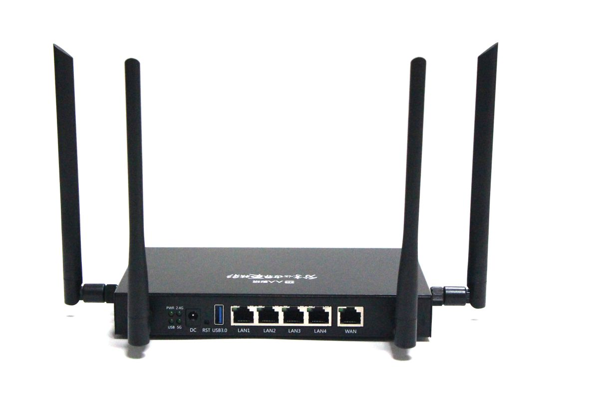
定义
路由（route）就是一组映射关系：
key-value，key为路径，value为component组件 ，由router管理结合生活中的路由
- 在生活的路由器中
LAN代表路径，通过网线与LAN连接的电脑代表组件
- 在生活的路由器中
工作流程
当
router检测到路径发生改变时，就会将当前页面替换成对应的组件
第2集 玩转路由的基本使用
简介：玩转路由的基本使用
效果展示
路由的使用
安装
xxxxxxxxxxnpm i vue-router创建路由器文件
xxxxxxxxxx// router/index.jsimport VueRouter from 'vue-router';import Home from '../components/Home';import Course from '../components/Course';export default new VueRouter({routes: [{path: '/home',component: Home,},{path: '/course',component: Course,},],});引入应用
xxxxxxxxxx// main.js// 引入import VueRouter from 'vue-router';import router from './router/index';Vue.use(VueRouter)new Vue({el: '#app',render: (h) => h(App),router: router,});切换
xxxxxxxxxx<router-link active-class='active' to='/home'>首页<router-link>展示
xxxxxxxxxx<router-view></router-view>
第3集 深度剖析路由的嵌套
简介：深度剖析路由的嵌套
路由的嵌套
配置
xxxxxxxxxx{path: '/course',component: Course,children: [{path: '/front',component: Front,},{path: '/back',component: Back,},],},跳转
xxxxxxxxxx<router-link active-class='active' to='/course/front'>前端<router-link>
路由组件
由路由控制的组件
新建
pages文件夹存放路由组件
切换之后的组件去哪了
- 被销毁
第4集 实现路由的传参上
简介：实现路由的传参上
query传参字符串
xxxxxxxxxx<router-link :to="`/course/front?text=${text}`" active-class="active">前端</router-link>对象
xxxxxxxxxx<router-link:to="{ path: '/course/front', query: { text: text } }"active-class="active">前端</router-link>
获取
xxxxxxxxxxthis.$route.query.text
第5集 实现路由的传参下
简介：实现路由的传参下
params传参路由器声明
params传参xxxxxxxxxx{name: 'qianduan',path: 'front/:text', //字符串形式传参时需加占位符告知路由器，此时是参数component: Front,},字符串
xxxxxxxxxx<router-link :to="`/course/front/${text}`" active-class="active">前端</router-link>对象
xxxxxxxxxx<router-link:to="{ name: 'qianduan', params: { text: text } }"active-class="active">前端</router-link>
获取
xxxxxxxxxxthis.$route.params.text
注意
- 字符串形式传参时需加占位符告知路由器， 在路径后面是参数
path对应的是query属性，name对应的是params属性
replace删除路由之前的历史记录
xxxxxxxxxx<router-link replace to="/course/back" active-class="active">后端</router-link>
第6集 怎么实现编程式路由导航？
简介：深度剖析编程式路由导航
为什么要用编程式导航
- 当导航跳转不使用声明式跳转时（如：button标签）
- 不通过事件触发路由跳转
编程式导航
push写法xxxxxxxxxxtoFront() {this.$router.push({name: "qianduan",params: {text: this.text,},});},replace写法xxxxxxxxxxtoFront() {this.$router.replace({name: "qianduan",params: {text: this.text,},});},路由的前进后退
xxxxxxxxxxthis.$router.forward() //前进this.$router.back() //后退this.$router.go() //前进：正数1、2 或者后退：负数-1、-2
第7集 实际开发中必备的路由缓存和全局前置路由
简介：深度剖析路由缓存和全局前置路由
路由缓存
效果展示
定义
让不展示的路由组件保持挂载在页面，不被销毁
写法
xxxxxxxxxx//注意 Front 是组件的名字<keep-alive include="Front"><router-view></router-view></keep-alive>
全局前置路由
作用
对路由组件进行权限控制
配置
xxxxxxxxxx{path: 'front',component: Front,meta: { isAuth: true },},{path: 'back',component: Back,meta: { isAuth: true },},xxxxxxxxxxrouter.beforeEach((to, from, next) => {if (to.meta.isAuth) {if (localStorage.getItem('isShow' === '1')) {next();} else {alert('暂无权限观看');}} else {next();}});
 愿景："让编程不再难学，让技术与生活更加有趣"
愿景："让编程不再难学，让技术与生活更加有趣"
更多课程请访问 xdclass.net
第九章 玩转Vue的状态管理模式Vuex
第1集 状态管理模式Vuex的简介
简介：状态管理模式Vuex的简介
Vuex
定义
- Vuex 是集中式存储管理应用的所有组件的状态（数据）
作用
- 可实现任意组件之间的通讯
特点
- 当不同的组件需要对同一个状态进行读写时，或者复用的状态较多
- 能够保持数据和页面是响应式的
- 便于开发和后期数据维护
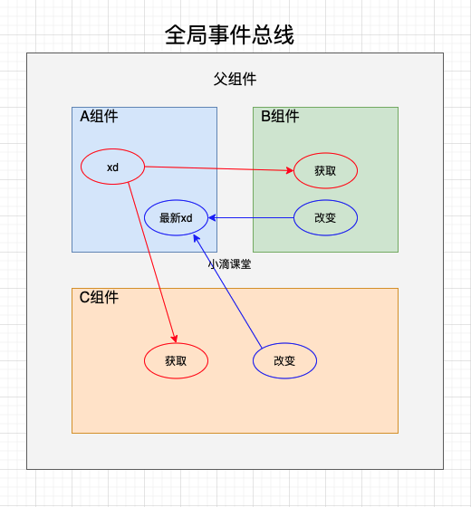 <<<<<<==========>>>>>> 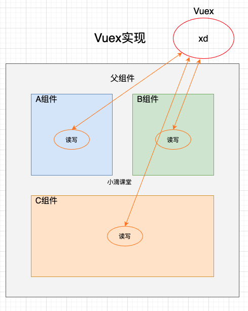
第2集 上手搭建Vuex运行环境
简介：上手搭建Vuex运行环境
配置
安装
xxxxxxxxxxcnpm install vuex创建
/store/index.js文件xxxxxxxxxx// 创建 /store/index.js 文件import Vue from 'vue' //引入Vueimport Vuex from 'vuex' //引入VuexVue.use(Vuex) //应用export default new Vuex.Store({actions:{}, //接受用户的事件mutations:{}, //操作state中的数据state:{}, //存放共享的数据})xxxxxxxxxx// main.jsimport store from './store/index.js'new Vue({el:"#app",render: h => h(App),store:store})
第3集 使用Vuex实现一个小案例
简介：Vuex实现一个小案例
实现对
store数据的count累加和累减读取
store的statexxxxxxxxxx<h1>当前的计数：{{ $store.state.count }}</h1>操作
store的statexxxxxxxxxxmethods: {// 累加add() {this.$store.commit("ADD", this.sum); //同步操作// this.$store.dispatch("add", this.sum); //异步操作},// 累减reduce() {this.$store.commit("REDUCE", this.sum); //同步操作// this.$store.dispatch("reduce", this.sum); //异步操作},},store配置actions和mutationsxxxxxxxxxx//接受用户的事件actions: {add(context, value) {context.commit('ADD', value);},reduce(context, value) {setTimeout(() => {context.commit('REDUCE', value);}, 1000);},},//操作state中的数据mutations: {ADD(state, value) {state.count += value;},REDUCE(state, value) {state.count -= value;},},注意
actions能够提供dispatch方法实现异步操作mutations必须是同步函数state只能通过mutations配置的方法去修改
第4集 通过Vuex实现多组件的数据通讯
简介：Vuex实现多组件的数据通讯
增加课程列表组件
读取
store的state中count和listxxxxxxxxxx<ul><li v-for="(i, index) in list" :key="index">{{ i.name }}</li></ul><button @click="xiajia">下架</button><h1>当前计数为：<span>{{ count }}</span></h1>- 使用计算属性
xxxxxxxxxxcomputed: {count() {return this.$store.state.count;},list() {return this.$store.state.list;},},操作
store的statexxxxxxxxxxmethods: {xiajia() {this.$store.commit("XIAJIA");},},
第5集 实现 store 的计算属性—getters
简介： 详解store 的计算属性—getters
getters定义
- 对
store中state数据进行加工
- 对
配置
xxxxxxxxxxgetters: {changeCount(state) {return state.count * 2;},},读取
xxxxxxxxxxthis.$store.getters.changeCount;
 愿景："让编程不再难学，让技术与生活更加有趣"
愿景："让编程不再难学，让技术与生活更加有趣"
更多课程请访问 xdclass.net
第十章【Vue3】的初识和项目搭建
第1集 认识Vue3和项目搭建
简介：认识Vue3和项目搭建
Vue3优点
- 更小的打包体积和内存
- 页面第一次的渲染速度和更新速度更快
- 更好的支持
TypeScript - 新增了
Composition API和内置组件
搭建Vue3项目
vue-cli创建
保持跟课程脚手架版本一致4.5.17，防止引用插件出现兼容问题
xxxxxxxxxxnpm install -g @vue/cli@4.5.17查看版本，不一致时重新安装
xxxxxxxxxxvue -V //查看版本全局卸载重装npm uninstall -g vue-clinpm install -g @vue/cli@4.5.17创建项目
xxxxxxxxxxvue create vue_project进入项目目录启动
xxxxxxxxxxnpm run serve
第2集 项目工程文件介绍与Devtools安装
简介：项目工程文件介绍与Devtools安装
项目文件
入口文件
main.js使用
createApp解析模板，更加小巧xxxxxxxxxximport { createApp } from 'vue'import App from './App.vue'createApp(App).mount('#app')
组件
<template>标签里可以插入多个根标签
Devtools安装- 正式版的
Devtools在Vue3项目中不生效 - 谷歌商店安装（图标上有beta字样）
- 直接使用我提供的安装包解压
- 正式版的
 愿景："让编程不再难学，让技术与生活更加有趣"
愿景："让编程不再难学，让技术与生活更加有趣"
更多课程请访问 xdclass.net
第十一章【Vue3】详解常用Composition API
第1集 走进Vue3的世界—setup
简介：走进Vue3的世界—setup
setup
setup函数是Vue3新的配置项是使用组合API的前提，数据、方法都要放到
setup函数里声明写法
xxxxxxxxxxsetup() {const name = "张三";const age = 18;function sayHello() {alert("你好,我是${name},今年${age}岁了");}return {name,age,sayHello,};},
第2集 实现数据的响应式—ref函数
简介：实现数据的响应式—ref函数
定义
- 定义一个响应式的数据
基本类型数据
引入
ref函数xxxxxxxxxximport { ref } from "vue";创建一个包含响应式数据的引用对象（
ref对象）xxxxxxxxxxlet name = ref("张三");let age = ref(18);操作数据
xxxxxxxxxxfunction changePerson() {name.value = "李四";age.value = "19";}
对象类型数据
创建一个包含响应式数据的引用对象（
ref对象）xxxxxxxxxxlet obj = ref({xd: "小滴课堂",course: "vue3",});操作数据
xxxxxxxxxxfunction changeCourse() {obj.value.course = "react";}
注意
- 可以处理基本类型数据、数组或者对象类型的数据
- 基本类型数据的响应式是通过
Object.defineProperty()实现 - 对象类型数据的响应式是通过 ES6 中的
Proxy实现
第3集 实现数据的响应式—reactive函数
简介：实现数据的响应式—reactive函数
定义
- 定义一个
对象类型的响应式数据（不能处理基本类型数据）
- 定义一个
写法
对象
xxxxxxxxxx// 定义let obj = reactive({xd: "小滴课堂",course: "vue3",});// 修改obj.course = "node";数组
xxxxxxxxxx// 定义let list = reactive(["吃饭", "睡觉", "敲代码"]);// 修改list[3] = "打游戏"
reactive和ref不同点- 处理数据类型不同：
ref可以处理基本类型和对象（数组）类型数据，reactive只能处理对象（数组）类型数据 - 实现原理不同：
ref处理基本类型数据通过Object.defineProperty()实现，reactive通过Proxy实现 - 操作不同：
ref操作数据需要加.value
- 处理数据类型不同：
组件数据多时更加趋向使用
reactive
第4集 剖析setup函数的执行时机和两个参数
简介：详解setup函数的两个参数
执行时机
- 在生命周期函数
beforeCreate之前执行一次，而且setup函数没有this
- 在生命周期函数
两个参数
props
第一个参数接收父组件的值，是一个对象
xxxxxxxxxxexport default {props: ["mess"], //需要props声明才能在setup收到参数setup(props) {console.log(props.mess);},};
context
上下文对象
触发自定义事件
xxxxxxxxxxexport default {emits: ["xd"], //需要emits声明才能在setup中使用setup(props, context) {function clickMe() {context.emit("xd", "子组件的值");}return {clickMe,};},};
第5集 掌握setup中的计算属性—computed函数
简介：详解computed函数
定义
- 通过已有的属性计算而来，跟vue2.x中的功能原理一样，使用方式有区别
使用
计算
ref定义的响应式数据xxxxxxxxxxconst fullName = computed({get() {return firstName.value + "-" + lastName.value;},set(value) {const arr = value.split("-");firstName.value = arr[0];lastName.value = arr[1];},});计算
定义的响应式数据xxxxxxxxxxperson.fullName = computed({get() {return person.firstName + "-" + person.lastName;},set(value) {const arr = value.split("-");person.firstName = arr[0];person.lastName = arr[1];},});
第6集 掌握setup中的监视属性—watch函数上
简介：详解watch函数
定义
- 监听值的变化，执行相关的操作，跟vue2.x中的配置一样
监听
ref定义的数据基本类型
xxxxxxxxxx// 监听一个ref定义的数据watch(num, (newValue, oldValue) => {console.log("num增加了", newValue, oldValue);},{ immediate: true, deep: true });// 监听多个ref定义的数据watch([num, num1], (newValue, oldValue) => {console.log("num增加了", newValue, oldValue);});
第7集 掌握setup中的监视属性—watch函数下
简介：详解watch函数
监听
reactive定义的数据使用
监听对象类型
xxxxxxxxxxwatch(numObj, (newValue, oldValue) => {console.log("numObj变化了", newValue, oldValue);});监听对象中的一个基本类型属性
xxxxxxxxxxwatch(() => numObj.a,(newValue, oldValue) => {console.log("numObj变化了", newValue, oldValue);});监听对象中的一些基本类型属性
xxxxxxxxxxwatch([() => numObj.a, () => numObj.b], (newValue, oldValue) => {console.log("numObj变化了", newValue, oldValue);});监听对象中的对象类型属性
xxxxxxxxxxwatch(numObj.c,(newValue, oldValue) => {console.log("numObj.c变化了", newValue, oldValue);});
总结
实现监听生效
ref定义的数据- 基本类型数据作为监听值
- 对象作为监听值，需要加
.value（用的少）
reactive定义的数据- 对象作为监听值
- 属性作为监听值，需要放在回调函数中
注意
如果监听
reactive定义的对象，则无法正确输出oldValue，且深度监听是强制开启的，无法关闭 （vue3配置）
第8集 认识setup中的watchEffect函数
简介：详解watchEffect函数
定义
- 在监听的回调函数中使用了属性，则监听该属性，不用在参数上指明监听哪个属性
写法
xxxxxxxxxxwatchEffect(() => {let xd = numa.value;let xd1 = numb.value;console.log("watchEffect函数执行了");});与
watch的区别属性监听区别：
watch手动添加定向的监听属性watchEffect自动监听使用到的属性
初始化执行：
watchEffect会初始化执行一次
建议开发中使用
watch监听，逻辑简单、依赖属性少的场景可以使用watchEffect
第十二章 【Vue3】掌握生命周期函数和数据处理
第1集 掌握Vue3中的生命周期函数
简介：详解Vue3中的生命周期函数
创建
xxxxxxxxxx创建前、后：beforeCreate、createdxxxxxxxxxx创建：setup挂载
xxxxxxxxxx挂载前、后：beforeMount、mountedxxxxxxxxxx挂载：onBeforeMount、onMounted更新
xxxxxxxxxx更新前、后（beforeUpdate、updated）xxxxxxxxxx更新：onBeforeUpdate、onUpdated卸载
xxxxxxxxxx销毁前、后：beforeDestroy、destroyedxxxxxxxxxx卸载：onBeforeUnmount、onUnmounted
第2集 掌握Vue3中的toRef和toRefs函数
简介：详解Vue3中的toRef和toRefs
toRef
定义
- 创建一个
ref对象，其value值指向另一个对象中指定的属性
- 创建一个
写法
xxxxxxxxxxconst name = toRef(person, "name");作用
- 将某个响应式对象的某一个属性提供给外部使用
toRefs
定义
- 批量创建多个
ref对象，其value值指向另一个对象中指定的属性
- 批量创建多个
写法
xxxxxxxxxxsetup() {let person = reactive({name: "张三",age: 19,});return {toRefs(person),};},作用
- 将某个响应式对象的全部属性提供给外部使用
第3集 多层嵌套的组价间的通讯—provide和inject
简介：详解provide和inject
作用
- 实现祖孙组件间的传值
写法
祖组件使用
provide提供数据xxxxxxxxxxlet name = ref("小滴课堂");provide("xd", name);后代组件使用
inject使用数据xxxxxxxxxxconst message = inject("xd");
 愿景："让编程不再难学，让技术与生活更加有趣"
愿景："让编程不再难学，让技术与生活更加有趣"
更多课程请访问 xdclass.net
第十三章【Vue3】仿美团项目开发-上
第1集 仿美团项目之需求分析
简介：详解需求分析
需要开发的页面
- 首页
- 购物车
- 订单
- 个人中心
- 店铺
- 生成订单
- 地址管理
- 编辑地址
- 新增地址
- 账号管理
- 注册
- 登录
主要功能点
- 店铺商品的加入购物车功能
- 商品的下单功能
- 用户地址管理功能
- 账号管理功能
- 注册登录功能
第2集 仿美团项目之项目搭建和初始化配置
简介：项目搭建初始化配置
rem适配安装
xxxxxxxxxxcnpm install postcss-pxtorem@5.1.1 amfe-flexible -S文件配置
xxxxxxxxxx// vue.config.jsmodule.exports = {css: {loaderOptions: {postcss: {plugins: [require('postcss-pxtorem')({ rootValue: 16 , propList: ['*']}),],},},},};引入
xxxxxxxxxx// main.jsimport 'amfe-flexible';
less预处理器安装
xxxxxxxxxxcnpm i less less-loader@7 -S
vant组件库的引入安装
xxxxxxxxxxcnpm i vant@next -Scnpm i babel-plugin-import -S引入
xxxxxxxxxx// main.jsimport { Button } from 'vant';app.use(Button)样式按需引入
xxxxxxxxxx// babel.config.jsplugins: [['import',{libraryName: 'vant',libraryDirectory: 'es',style: true,},'vant',],],使用
xxxxxxxxxx<van-button type="primary">主要按钮</van-button>
阿里巴巴矢量库引入
引入
xxxxxxxxxx// index.html<script src="http://at.alicdn.com/t/font_2701887_5roykhspg1e.js"></script>使用
xxxxxxxxxx<svg class="icon" aria-hidden="true"><use xlink:href="#icon-xxx"></use></svg>
报错
错误
xxxxxxxxxxsockjs.js:1609 GET http://192.168.0.120:8080/sockjs-node/info?t=164267043253解决
xxxxxxxxxxcnpm install -g webpack webpack-cli webpack-dev-server
第3集 仿美团项目之模块化路由的使用上
简介：详解路由配置
代码提交远程仓库
连接
xxxxxxxxxxgit remote add origin https://gitee.com/wen_zhao/xdclass.git将本地仓库push远程仓库
xxxxxxxxxxgit pull origin master --allow-unrelated-histories覆盖远程仓库
xxxxxxxxxxgit push -f origin master
项目路由配置
安装
xxxxxxxxxxcnpm i vue-router@4 -S新建路由配置文件
xxxxxxxxxx// router/index.jsimport { createRouter, createWebHashHistory } from 'vue-router';const router = createRouter({history: createWebHashHistory(),routes: [{path: '/',redirect: '/home',},{path: '/home',component: () => import('../pages/MyHome'),},{path: '/cart',component: () => import('../pages/MyCart'),},{path: '/me',component: () => import('../pages/MyMessage'),},{path: '/order',component: () => import('../pages/MyOrder'),},],});export default router;引入
xxxxxxxxxx// main.jsimport router from './router/index';const app = createApp(App);app.use(router);app.mount('#app');
第4集 仿美团项目之模块化路由的使用下
简介：详解路由配置
使用
xxxxxxxxxx// App.vue<router-view></router-view>xxxxxxxxxx// Footer.vue<div><router-link to="/home">首页</router-link></div><div><router-link to="/cart">购物车</router-link></div><div><router-link to="/order">订单</router-link></div><div><router-link to="/mine">我的</router-link></div>
第5集 仿美团项目之首页开发上
简介：详解首页开发
第6集 仿美团项目之首页开发下
简介：详解首页开发
第7集 仿美团项目之店铺开发-标签切换
简介：详解店铺开发
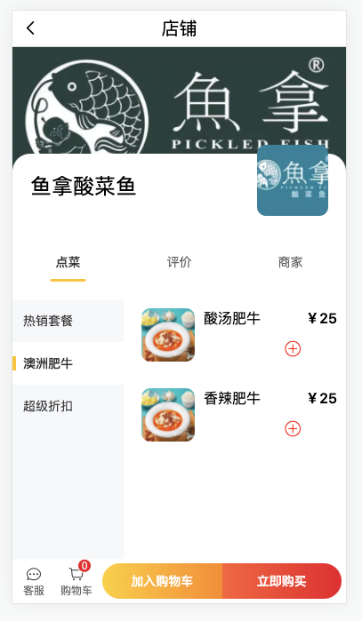
tabs切换- 商品分类切换
- 增加商品
- 商品导航：客服（无）、购物车商品个数、加入购物车、立即购买
第8集 仿美团项目之店铺开发-左侧商品分类
简介：详解店铺开发
第9集 仿美团项目之店铺开发-商品的选购
简介：详解店铺开发
第10集 仿美团项目之店铺开发-商品的导航
简介：详解店铺开发
第十四章【Vue3】仿美团项目开发-中
第1集 仿美团项目之购物车开发-商品列表
简介：详解购物车开发
第2集 仿美团项目之购物车开发-结算功能
简介：详解购物车开发
第3集 仿美团项目之购物车开发-结算功能下
简介：详解购物车开发
第5集 仿美团项目之购物车开发-编辑功能
简介：详解购物车开发
第6集 仿美团项目之生成订单开发
简介：详解生成订单开发
第7集 仿美团项目之生成订单开发
简介：详解生成订单开发
第8集 仿美团项目之订单页面开发
简介：详解订单页面开发

第9集 仿美团项目之地址管理开发上
简介：详解地址管理开发

第10集 仿美团项目之地址管理开发下
简介：详解地址管理开发

第十五章【Vue3】仿美团项目开发-下
第1集 仿美团项目之个人中心页面开发
简介：详解个人中心页面开发

第2集 仿美团项目之注册登录开发
简介：详解注册登录开发
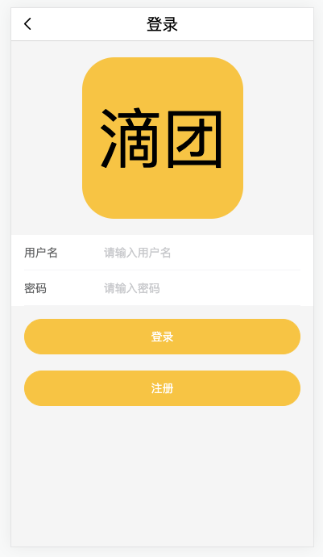 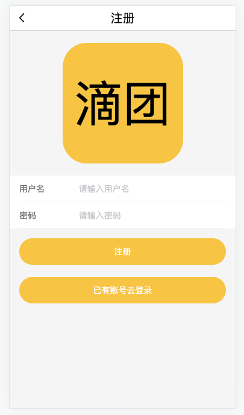
第3集 仿美团项目之注册登录开发下
简介：详解注册登录开发
第4集 仿美团项目之账号管理开发
简介：详解账号管理开发
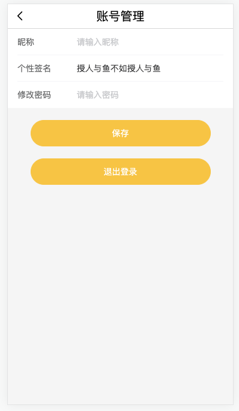
第5集 仿美团项目之axios请求数据动态展示
简介：axios请求数据动态展示
安装
xxxxxxxxxxcnpm i axios -S定义接口
xxxxxxxxxx// api.js;import axios from './request';export const getHomeData = () => axios.get('/mock/home.json');